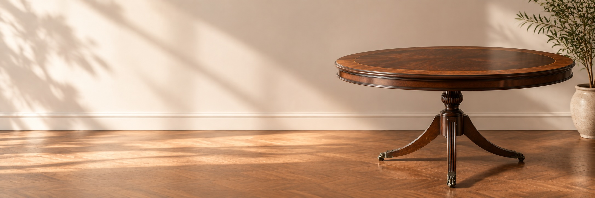
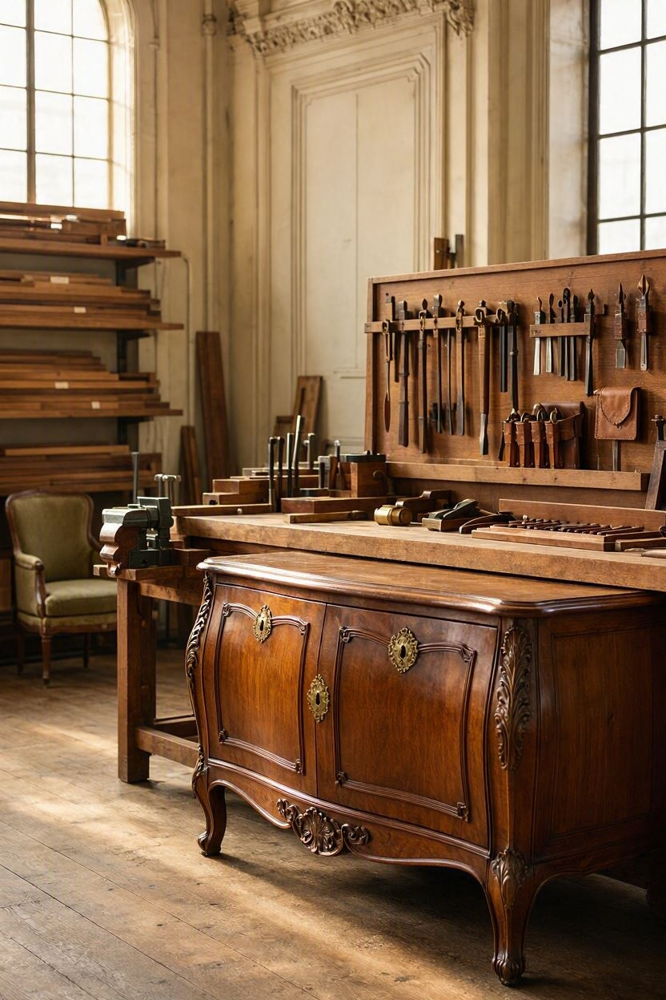
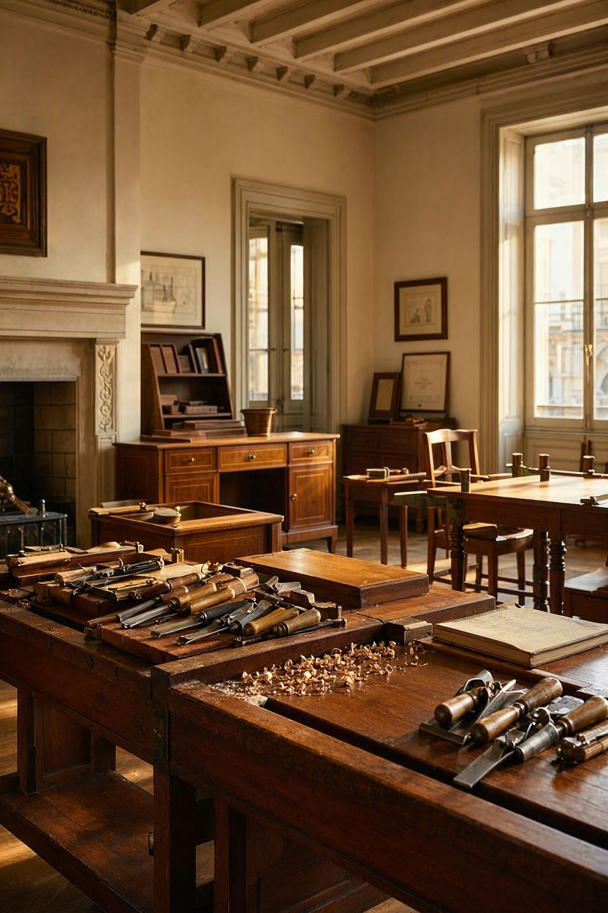
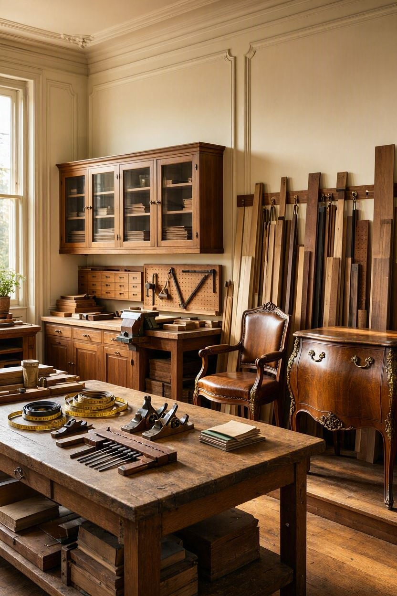

-
Diseños a medida
-
Acabados impecables
-
Compromiso y experiencia
Producto de la semana

Mesa Natalia
El taller
Lo que alguna vez fue el conventillo de los inmigrantes italianos Caterina Moreschi y Giovanni Enrico Tolotti, con el tiempo se transformó en el taller de carpintería de sus hijos, Francisco y Enrique Tolotti. Entre esas mismas paredes comenzó a tomar forma una tradición familiar ligada al trabajo de la madera y al oficio de la ebanistería. Años más tarde, el taller se trasladó a un nuevo espacio en el que hoy se continúan haciendo sueños realidad.
Av. Córdoba y Mario Bravo, Buenos Aires, Argentina.




